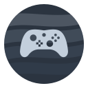
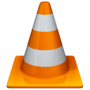
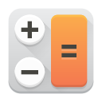
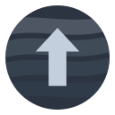
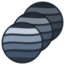
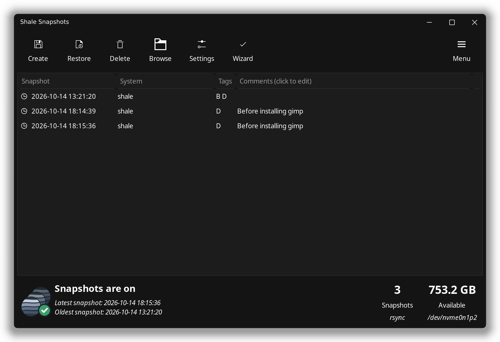

Make it yours
Dark or light
Pick a look in Settings and the whole desktop follows: windows, the taskbar, the wallpaper and Shale's own apps.

Light by design
Minimal, fast and open source
Shale comes with what you need and nothing else, so your computer spends its power on you.
Minimal
A handful of good apps, no trial software, no clutter. Add anything else from the Software Manager when you want it.
Slim
Built on Arch Linux, which starts with almost nothing. Only what Shale needs runs in the background, leaving memory and storage for your things.
Fast
Windows open instantly with no animations to wait for. The desktop stays quick and smooth, even with lots of apps open.
Open source
Shale and every app it comes with are open for anyone to read, check and improve. Nothing hidden, nothing watching you.
The app store
Thousands of free apps, one click away
Shale comes with the Software Manager, an app store full of free software from Flathub and Arch Linux. Find what you need, click Install, and it shows up in your menu. No websites to search and no installers to click through.
Games too: get Steam from the Software Manager and play your library.

The Software Manager, the app store that comes with Shale.

Gaming
Smooth, steady gameplay
Game Panel runs your Steam games inside gamescope, the same compositor that powers the Steam Deck. Every frame is paced evenly and goes straight to your screen, so games feel smooth and responsive instead of fighting the desktop for a turn.
Switch it on for every game at once, or tune one game: resolution, refresh rate, an FPS cap, FSR upscaling, variable refresh rate and HDR. Changes apply the next time you play, with no Steam restart.

Ready on day one
Everything you do every day, already installed
Browse the web
A fast, familiar web browser for your bookmarks, email and videos.
Comes with Chromium
Write and work
Documents, spreadsheets and slides. Opens and saves Word and Excel files.
Comes with LibreOffice

Watch and listen
Plays almost any video or music file with no extra downloads.
Comes with VLC
Look at photos
Browse your pictures and make quick fixes.
Comes with Gwenview
Send files to your phone
Share photos and files with phones and computers nearby, no cables needed.
Comes with LocalSend

Quick sums
A simple calculator, pinned right on the taskbar.
Comes with Calculator

Updates
One click keeps everything up to date
Open Software Update and click Update now. Your whole computer and every app update together, with a progress bar and no password to type.
A restore point is saved first, and you restart whenever it suits you.


Peace of mind
Something went wrong? Go back in time.
Shale quietly saves a copy of your system every day and right before every update. If something stops working, you can put everything back the way it was. Your photos and documents stay exactly where they are.
- 1
Open Shale SnapshotsIt lists every saved copy with its date, like "Before update".
- 2
Pick a day when things workedChoose the copy from before the problem started.
- 3
Click Restore and restartYour computer comes back just as it was then.

Get Shale
Four steps from download to desktop
Download Shale
Get the file from our download page. It's one file and it's free.
Put it on a USB stick
Use the free app balenaEtcher or Fedora Media Writer. Pick the file, pick the stick, click Flash.
Start from the stick
Plug it in and restart. Shale opens and you can try it before installing anything.
Click Install
Choose your language, Wi-Fi, and a name and password. Shale does the rest.
A USB stick of 8 GB or more, an internet connection while installing, and a 64-bit PC.
Installing Shale replaces everything on the drive you choose, including Windows. Copy your files somewhere safe before you start.
Questions
Things people ask first
What is Linux?
Linux is free software that runs your computer, the same job Windows or macOS does. It powers most of the internet and every Android phone. Shale is one version of it, set up to be easy and calm for everyday use.
Is it really free?
Yes. Shale is free to download, free to use and free to share. There are no subscriptions, no ads and no account to sign up for.
Do I need to type commands?
No. Installing, updating and adding apps all work with normal buttons and windows.
Will my Windows programs work?
Most popular things have a free equivalent in the Software Manager, and many Windows games run through Steam. Some Windows-only programs, like certain Adobe apps or games with strict anti-cheat, don't work. If you rely on one of those, check before you switch.
Can I go back to Windows later?
Yes, by installing Windows again from a Windows USB stick. Shale's snapshots undo problems within Shale, but they can't bring back a system that was replaced, so keep a backup of your files.
Will it work on my computer?
Shale runs on most 64-bit PCs. AMD graphics work right away, and Intel and NVIDIA graphics are set up for you during install. The easiest way to check is to start from the USB stick and try it before installing.